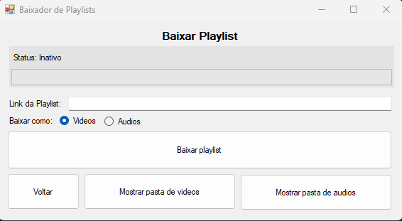
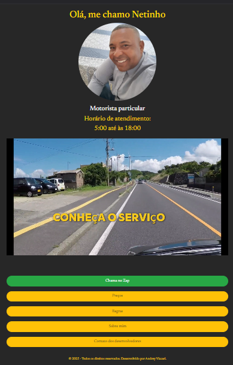

Projetos


Outros projetos em breve
Muitos dos meus projetos estão em repositório privado, porém desejo adicionar mais projetos públicos ao meu Github.
Seja bem-vindo ao meu portfólio!
Olá, me chamo Andrey Viccari, e sou um programador em busca de conhecimento na área da tecnologia.
Comecei a gostar dessa área depois de perceber que tudo pode ser criado do zero, com tempo e dedicação.


Muitos dos meus projetos estão em repositório privado, porém desejo adicionar mais projetos públicos ao meu Github.